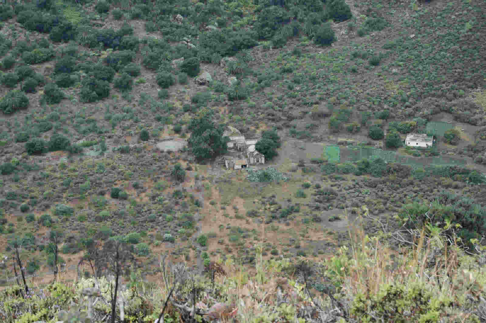

Camino circular de El Fondo
En las Casas del Fondo, punto donde finaliza el sendero anterior, comienza este camino que discurre a lo largo del perímetro interior de la Caldera, dando lugar a un itinerario circular que puede iniciarse indistintamente por la derecha o por o la izq. si bien se recomienda esta última opción.
El recorrido es en general llano, sin dificultad alguna y discurre al pié de los taludes interiores de la caldera, en parte sobre antiguas terrazas de cultivo conectando con los lugares acondicionados para la estancia de los visitantes. Entre estos destacan las áreas de descanso situadas al pie de la vertiente oriental de la Caldera que permiten disfrutar de sus diferentes perspectivas así como observar con toda comodidad las numerosas especies de flora endémica y la variada ornitofauna que alberga este paraje razón por la cual la duración estimada para su recorrido suele prolongarse mucho mas.
Tiempo estimado:25 minutos